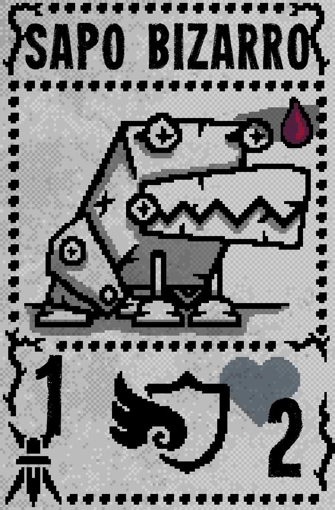

Em sua primeira fase, o Vendedor de Peles joga, respectivamente, 3 Sapos Bizarros e uma Armadilha Saltadora, sendo o segundo Sapo recuado.
Fase 2
SPOILER
Na segunda fase, o Caçador revela ser também a Comerciante! Todos os slots inimigos são ocupados por cartas com selos extras, funciona igual a loja da Comerciante, uma pele por uma carta à sua escolha.
cartas pessoais
Sapo Bizarro

Ao ser morto, o Sapo deixa uma Armadilha Saltadora em seu lugar.
Armadilha Saltadora
Quando atingida, mata instantaneamente a carta à sua frente.